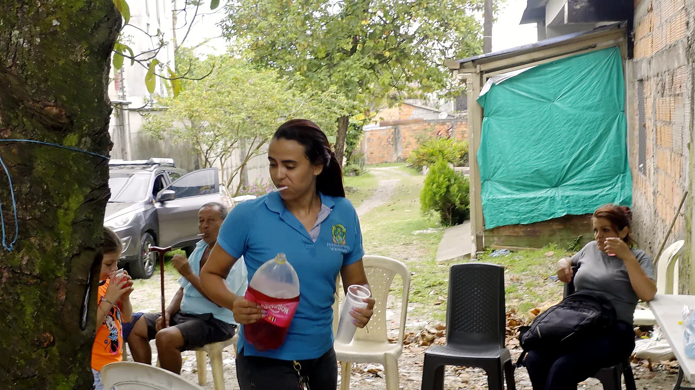
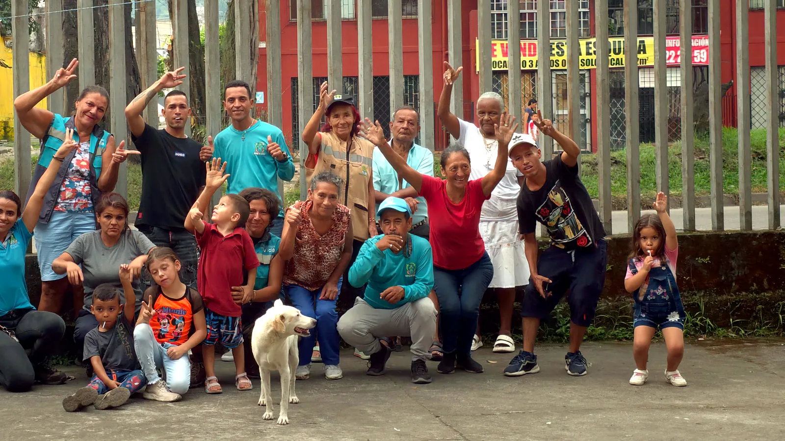
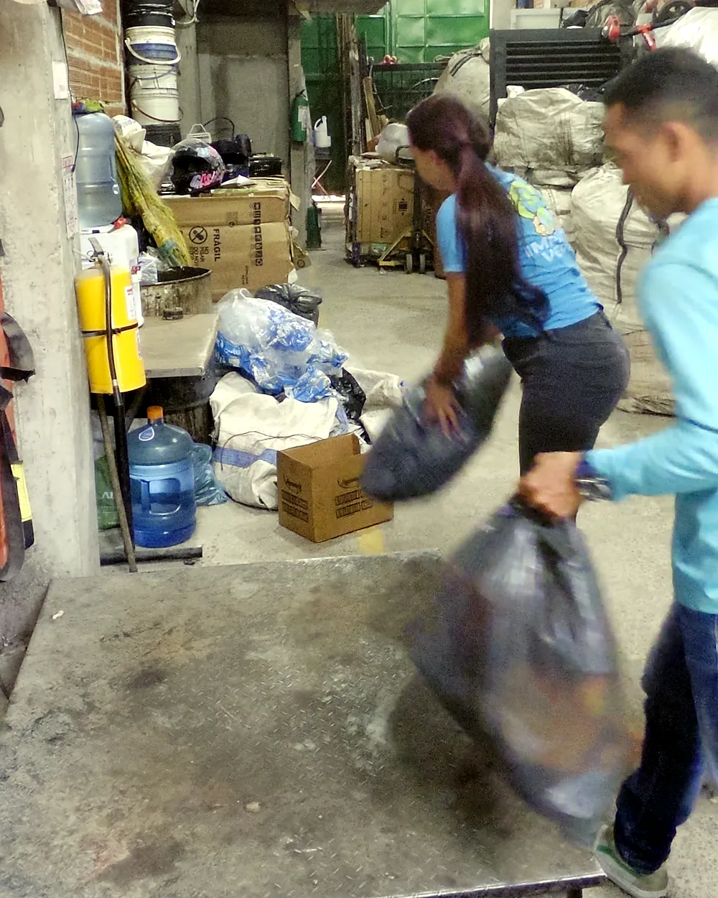
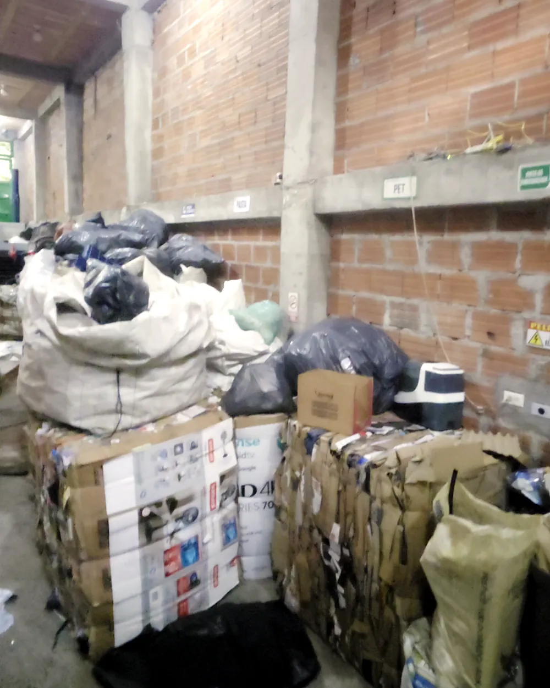

Sensibilización a usuarios
Brindamos capacitaciones y jornadas de sensibilización ambiental para promover la correcta separación en la fuente, fortalecer la cultura del reciclaje y el aprovechamiento responsable de los materiales.
Somos recicladores de oficio organizados. Recogemos, pesamos, clasificamos y llevamos tu material de vuelta a la industria. Consulta tu ruta o pide una recolección.
Nuestra bodega en el barrio Industrial
Escribe tu barrio o zona y mira el día y la hora.

Somos la Asociación Impacto Verde de Villavicencio, Meta. Trabajamos para dignificar y fortalecer la labor de los recicladores de oficio.
Buscamos que su esfuerzo se reconozca y que haya oportunidades que mejoren su calidad de vida y la de sus familias, mientras cuidamos el ambiente y construimos una ciudad más sostenible.
Conoce la asociaciónDel momento en que separas hasta que el material vuelve a la industria: así lo cuidamos en cada paso, para que se aproveche y aporte a la economía circular.
Recogemos el material separado en hogares, comercios y oficinas.
Lo llevamos hasta nuestra bodega del barrio Industrial.
Pesamos cada entrega en báscula y la dejamos registrada.
Separamos por tipo: cartón, papel, plásticos y metales.
Prensamos el material en pacas para aprovechar el espacio.
Lo guardamos ordenado y protegido hasta su venta.
Lo entregamos a la industria, que lo vuelve a producir.




Brindamos capacitaciones y jornadas de sensibilización ambiental para promover la correcta separación en la fuente, fortalecer la cultura del reciclaje y el aprovechamiento responsable de los materiales.

Emitimos certificaciones que respaldan las cantidades de material recuperadas y gestionadas, como soporte de su adecuada disposición y de tu aporte a la sostenibilidad.
Separas en casa y nosotros nos encargamos del resto.
Pon en una bolsa aparte lo que se puede reciclar. Limpio y seco rinde más.
Un reciclador de la asociación pasa por tu ruta y recoge el material.
El material se separa por tipo, se pesa y se alista para entregarlo.
La industria lo transforma en nuevos productos y el ciclo vuelve a empezar.
Fotos de nuestra bodega, las calles y la gente. Dale play al tour en video.
Cuéntanos tu barrio y qué material tienes. Te decimos cómo recogerlo.